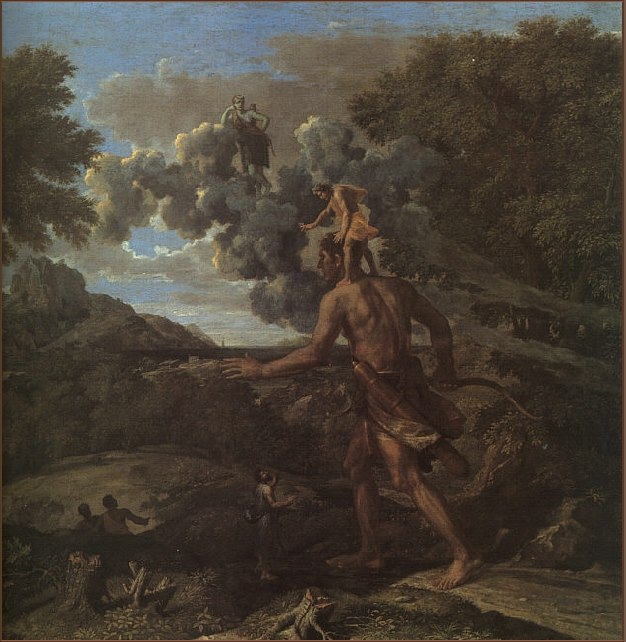

GIANT X
About
News
Books
Quotes
Thinking
Guest
Contact
GIANT X : 자연선택

Giant X : 자연선택
은 거인들의 어깨 위에 서서 세상을 더 멀리 바라보기 위함입니다.
If I have seen further it is by standing on the shoulders of giants.
- Issac Newton -